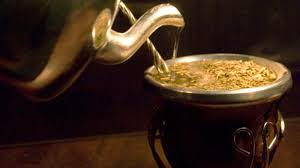
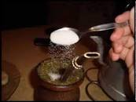

Mate amargo |
Mate dulce |
|---|---|
El mate amargo es una infusión muy concentrada de yerba mate, la que se prepara
llenando un mate sabio que es un recipiente especialmente diseñado con hojas secas
y trituradas de yerba mate y que se toma con bombilla, volcando agua caliente pero
no hervida sobre la misma cada vez que se va a sorber. 
|
El mate dulce es una infusión con menos yerba que el mate amargo y se prepara en un mate
pequeño ya que la yerba no es la que predomina en este tipo, sino la azucar o edulcorante,
suelen tambien endulsar con una mezcla de azucar con café, y al igual que en mate amargo
el agua no debe estar hervida.

|